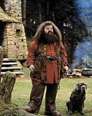

| About the Class |
The student in this class learns about caring, learning, maintaining and also breeding of Magical Creatures. |
The student will come across many a fascinating creatures in this class. |
This class is an elective from third year on. |
| Professor |
Rubeus Hagrid |
 |
Rubeus Hagrid has a vast knowledge all the creatures as he breeds most of them. |
| Class Details |
Class Location |
This class meets at the Forbidden Forest. |
Please refer to schedule on the first day of class. |
| Required Material |
- The Monster Book of Monsters
- Fantastic Beasts and Where to Find Them
|
Protective body gear |
All the books can be purchased at Flourish and Blotts Bookstore in Diagon Alley. |